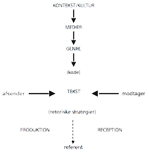

Paradigme er et græsk sammensat ord der betyder noget i stil med mønster. Den måde man bruger ordet i dag er mere som en form for tænkemåde eller en synsvinkel. Jeg ser det som en form for perception af verdenen. Der er overordnet set 3 paradigmer. Den naturvidenskablige er mere ren fakta uden at anskue det ud fra hvad folk mener eller ser. Kjolen er blå. Det kan vi måle at den er. Så er der det samnfundsvidenskablige paradigme her holdes stadigt meget af fakta, men der indrages meningsfortolkninger til resultatet. Man vil spørge folk om hvilken farve, de mener kjolen har, og så vil man ud fra det, finde ud af hvilken farve kjolen nok har. Til sidst er der det Humanistiske paradigme. Her er der langt mere en subjektiv indgangsvinkel til et emne. Her vil man sætte folk ned og snakke om kjolen og give folk mulighed, for at forklare hvorfor de mener kjolen er en given farve, og resultatet vil også være lidt mere flydende derefter, men med en stører forståelse for de mennesker der er med.
Det naturvidenskablige paradigme vil man kun kunne bruge til noget, der kan måles eller vejes, so to speak. Man holder sig til ren fakta og prøver ikke at fortolke noget. så her kan man fortælle f.eks. hvor meget et molekyle vejer, men ikke hvorfor. Det er langt mere en hvilke metoder, der bliver anset som acceptable at bruge til en givet ting end så meget andet.
Har fokus på afsenderen, så man kan forudsige hvilken effekt en given besked har. Det er mere fakta baseret. Afsenderen er den styrende i kommunikationen, og modtageren ses som værende passiv. Det bygger på at den undersøgende kan være objektiv. Man bruger her en blanding mellem kvantitativ og kvalitative undersøgelser. Bla. bruger det samfundsvidenskabelige paradigme en del metoder til at undersøge. Bla. Laswels formel (kanyle formlen.)
Fokus på modtagerne, altså bliver modtageren ”medbestemmende” for hvilket budskab, der sker i kommunikationen. Der er fokus på interaktion og ikke kun den ensidet besked. Her er hvad modtagerne forstår meget vigtigere, end hvad hensigten med beskeden er. Her bruger man oftest kvalitative metoder. Bla. Imk modellen.
